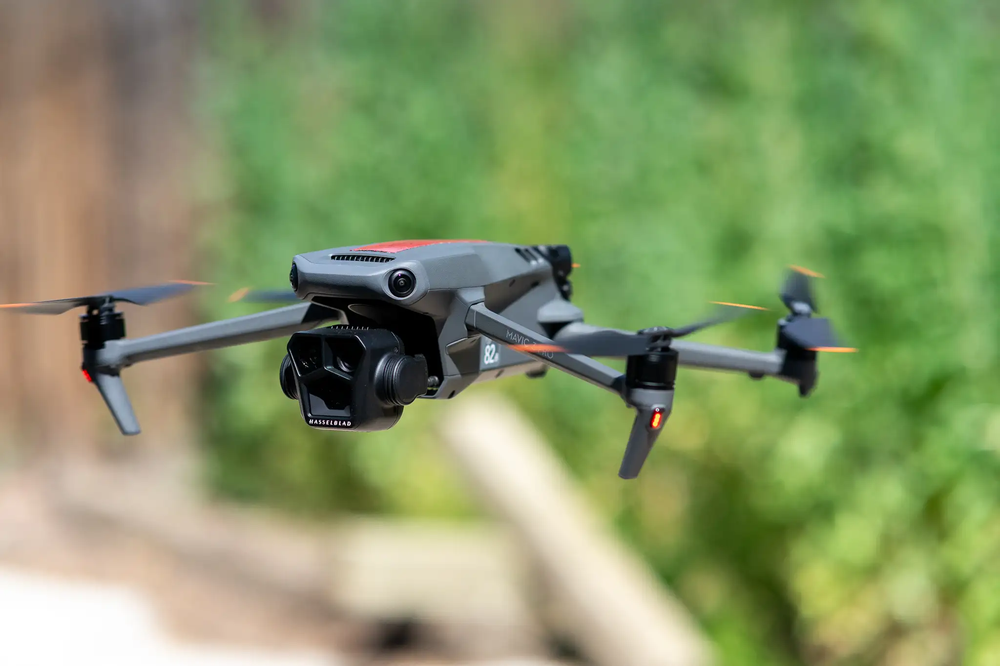

← Back to Projects
Vision Tracking Drone
A fully custom drone, designed, built, and programmed from scratch to track and follow objects. Currently a work in progress.

Overview
[DUMMY TEXT — expand on the project overview here: what the drone tracks, why you built it from scratch, and what makes the vision/autonomy stack interesting.]
Design & Approach
[DUMMY TEXT — describe the frame build, onboard camera/sensors, the computer vision pipeline, and the tracking/follow control logic.]
Results & Status
[DUMMY TEXT — describe current status, tracking accuracy/performance so far, and next steps.]